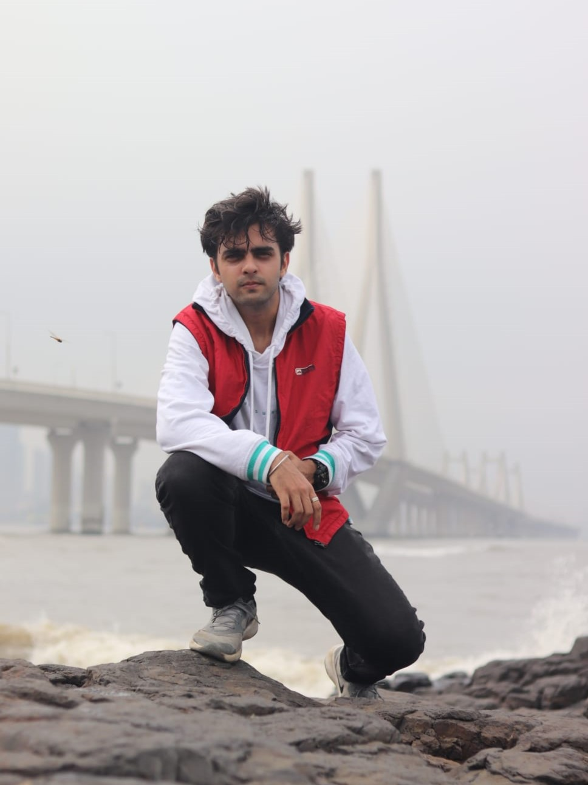

A professional data science badass.

Greetings,
I tango with algorithms and make charts blush, amongst other things of course. As a natural-born storyteller, the knack for analyzing facts and data to narrate an interesting tale has got the better of me. I have a keen interest in data science and machine learning, fueled by my certifications and hands-on experience.
All the way from Mumbai, I'm a dedicated Computer Science junior. Come 2024, I'll be embarking on an educational odyssey to the United States. Through the years, I've earned a reputation as a hardworking student, amassing numerous notable achievements by honing a diverse range of skills. And most importantly, doing it with flair.
Beyond my mundane geeky side, I'm an avid sportsperson and a wanderlust-driven nomad. I'm a quick learner and a great teammate with an observant eye for detail. Looking forward to use my knowledge in the practical world to make some mistakes and improve. Oh, and did I mention that I am an absolute social butterfly?
Therefore, in conclusion, I invite you to explore my portfolio as I am a passionate seeker of new professional opportunities, ready to unlock new dimensions of success with my expertise. I believe humans shall forever be outmanned by the data on the internet, we better balance the scales by harnessing this data efficiently, driving meaningful impact in every endeavor.
With data-driven gratitude,
Avichal :)